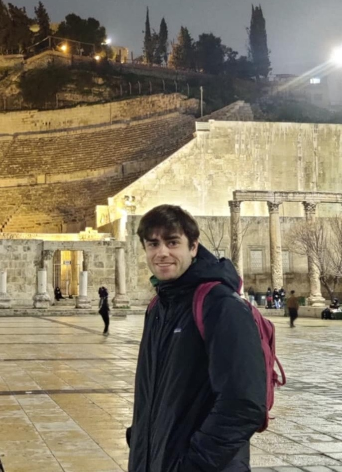

Frederik Hytting Jørgensen

I'm a PhD student affiliated with Copenhagen Causality Lab and the P1 Centre for Artificial Intelligence. Supervised by Sebastian Weichwald and Jonas Peters.
Interested in the mathematical and conceptual foundations of machine intelligence. Especially excited about projects that may make AI safer.
During my PhD, I've done an academic exchange at Stanford,
visiting Thomas Icard and the Center for the Study of Language and Information.
I was a 2025
Pivotal Fellow at the London Initiative for Safe AI,
working with Lewis Hammond and a 2026 Winter Fellow at GovAI working with Aidan Homewood and the risk management team.
LessWrong
Please reach out:
Email: frederik [dot] hytting [at] math [dot] ku [dot] dk